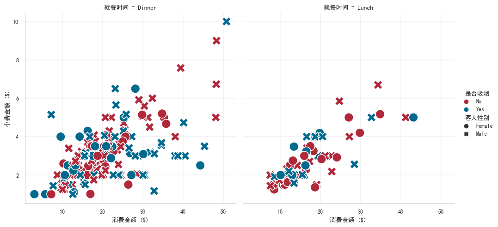
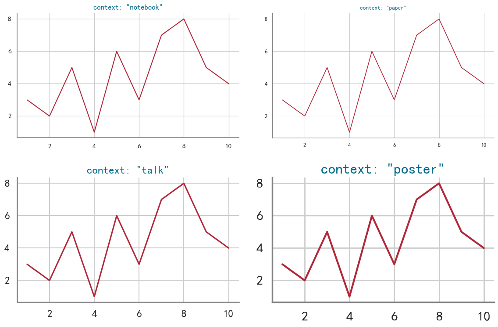

Python可视化
Python可视化教程
本文章将使用matplotlib,seaborn进行可视化教程。
1.Seaborn简介
1.1Seaborn快速上手
import seaborn as sns |

1.2可视化步骤
从上面的示例可以看到，使用Seaborn进行可视化主要有4个主要步骤。
- 导入依赖包
导入seaborn包并简写为sns。 - 设置绘图风格
设置绘图风格，例如，“whitegrid"；对坐标轴、图例、网格线等图表属性个性化设置。 - 准备绘图数据
seaborn支持多种数据集格式，可根据可视化数据集的格式灵活准备数据。 - 挑选seaborn函数绘图
挑选符合数据的函数进行绘图。
1.2绘图函数
从架构层面，seaborn主要有两大类绘图函数，图级别绘图函数（figure-level）、轴级别绘图函数（axes-level）。
从功能层面，seaborn绘图函数可以划分为以下几类:
- 美化函数（aesthetics）
美化图形比例尺度（the scaling of plot elements）、图形风格（the general style of the plots）、图形配色（the color palette/colormap)。 - 单个图函数
绘制相关关系图（Relational plots）、分布关系图（Distribution plots）、分类关系图 (Categorical plots)、回归关系图（Regression plots）、矩阵关系图 (Matrix plots) 、统计估计和误差棒 (Statistical estimation and error bars) 。 - 组合图函数
同时展示多个子图表或图形，以便进行比较或展示相关信息。包含分面图 (Facet grids)、配对关系图 (Pair grids) 、组合关系图 (Joint grids)。
2.Seaborn图形美化
seaborn中从3个方面美化图形:
- 比例尺度 (context)，设置the scaling of plot elements，例如，图中文字大小、标记marker大小、线条宽度等；
- 风格（style），设置the general style of the plots，例如，图中网格线是否开启、颜色、线宽等；
- 配色（palette），设置color palette，例如，Set1、#a1c9f4、red等。（使用多巴胺配色能使得图片更加清晰、美观）
2.1context设置图形比例
查看context内容可以使用：
sns.plotting_context() |
{'font.size': 9.600000000000001,
'axes.labelsize': 9.600000000000001,
'axes.titlesize': 9.600000000000001,
'xtick.labelsize': 8.8,
'ytick.labelsize': 8.8,
'legend.fontsize': 8.8,
'legend.title_fontsize': 9.600000000000001,
'axes.linewidth': 0.4,
'grid.linewidth': 0.3,
'lines.linewidth': 1.5,
'lines.markersize': 6.0,
'patch.linewidth': 1.0,
'xtick.major.width': 1.25,
'ytick.major.width': 1.25,
'xtick.minor.width': 1.0,
'ytick.minor.width': 1.0,
'xtick.major.size': 6.0,
'ytick.major.size': 6.0,
'xtick.minor.size': 4.0,
'ytick.minor.size': 4.0}
即：
'font.size': 12.0, # 字体大小 |
设置context内容:
可以使用set_context设置，但是不会改变图标整体的样式。
seaboen内置了四套context设置，分别为paper,notebook,talk,poster。
下面进行展示。
import seaborn as sns |

本博客所有文章除特别声明外，均采用 CC BY-NC-SA 4.0 许可协议。转载请注明来自 StudyinCAU！
评论